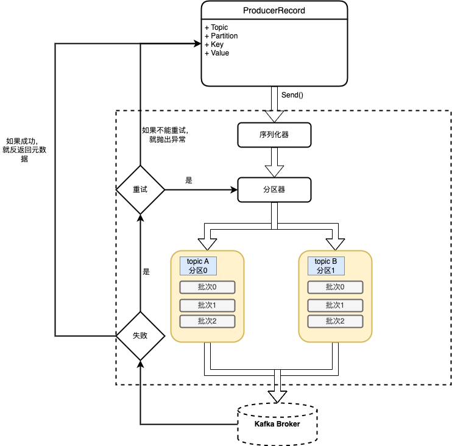
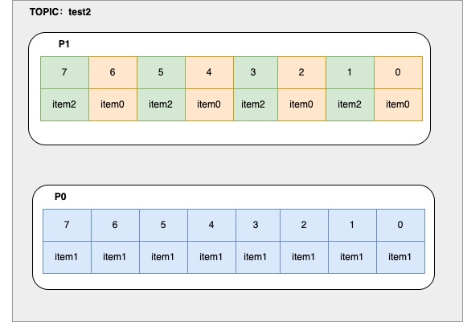

Kafka学习笔记
3. 基础开发及消费者提交维护offset不同粒度
编码实现kafka生产与消费消息
-
零拷贝
-
producer面向的是broker
-
consumer消费消息依赖于消费者组
-
kafka自己存储数据，指定消息的offset
-
自动异步提交时（默认每5s提交一次），导致的问题？
- 重复消费&消息丢失
- 场景
- 还没到时间，挂了，没提交，重起一个consumer，参照offset的时候，会重复消费
- 一个批次的数据还没写数据库成功，但是这个批次的offset被异步提交了，挂了，重起一个consumer，参照offset的时候，会导致消息丢失。
-
指定一次拉取的最多条数
-
指定拉取一次的超时时间
-
消费的时候可以指定开始消费的下标
- latest和earliest区别
- latest—表示一个新的消费者组，刚启动时不消费历史数据（即之前已经被别的组消费的数据）
- earliest—表示新消费者组启动之后，会开始重新消费历史数据
- latest和earliest区别
-
分区分配：一个消费者可以消费同一个topic多个分区的数据
-
手动提交offset的配置，按照分区进行处理消息
实践
- 单节点kafka只能有一个副本，可以有多个分区
- kafka开启自动提交，默认是每隔5s自动提交一次offset
- latest和earliest区别
- earliest 当各分区下有已提交的offset时，从提交的offset开始消费；无提交的offset时，从头开始消费
- latest 当各分区下有已提交的offset时，从提交的offset开始消费；无提交的offset时，消费新产生的该分区下的数据
- 结论：提交过offset，latest和earliest没有区别，但是在没有提交offset情况下，用latest直接会导致无法读取旧数据。
生产者代码
-
生产者架构图

-
创建Kafka生产者
- boostrap.servers
- key.serializer
- value.serializer
-
代码示例
package com.focus.kafka.produce; import org.apache.kafka.clients.producer.*; import org.apache.kafka.common.serialization.StringSerializer; import org.junit.jupiter.api.Test; import java.util.Properties; import java.util.concurrent.ExecutionException; import java.util.concurrent.Future; public class ProducerTest { // ./bin/kafka-topics.sh --create --bootstrap-server 127.0.0.1:9092 --replication-factor 1 --partitions 2 --topic test2 @Test public void producer() throws ExecutionException, InterruptedException { String topic = "test2"; Properties p = new Properties(); p.setProperty(ProducerConfig.BOOTSTRAP_SERVERS_CONFIG, "localhost:9092"); //kafka 持久化数据的MQ 数据-> byte[]，不会对数据进行干预，双方要约定编解码 //kafka是一个app：：使用零拷贝 sendfile 系统调用实现快速数据消费 p.setProperty(ProducerConfig.KEY_SERIALIZER_CLASS_CONFIG, StringSerializer.class.getName()); p.setProperty(ProducerConfig.VALUE_SERIALIZER_CLASS_CONFIG, StringSerializer.class.getName()); p.setProperty(ProducerConfig.ACKS_CONFIG, "-1"); KafkaProducer<String, String> producer = new KafkaProducer<String, String>(p); //现在的producer就是一个提供者，面向的其实是broker，虽然在使用的时候我们期望把数据打入topic /* test2,2partition,三种商品，每种商品有线性的3个ID,相同的商品最好去到一个分区里 */ while (true) { for (int i = 0; i < 3; i++) { for (int j = 0; j < 3; j++) { ProducerRecord<String, String> record = new ProducerRecord<>(topic, "item" + j, "val" + i); // Future<RecordMetadata> send = producer.send(record); Future<RecordMetadata> send = producer.send(record, new Callback() { @Override public void onCompletion(RecordMetadata metadata, Exception exception) { if (exception != null) { exception.printStackTrace(); } } }); RecordMetadata rm = send.get(); int partition = rm.partition(); long offset = rm.offset(); System.out.println("key: " + record.key() + " val: " + record.value() + " partition: " + partition + " offset: " + offset); } } } } /** * key: item0 val: val0 partition: 1 offset: 0 * key: item1 val: val0 partition: 0 offset: 0 * key: item2 val: val0 partition: 1 offset: 1 * key: item0 val: val1 partition: 1 offset: 2 * key: item1 val: val1 partition: 0 offset: 1 * key: item2 val: val1 partition: 1 offset: 3 * key: item0 val: val2 partition: 1 offset: 4 * key: item1 val: val2 partition: 0 offset: 2 * key: item2 val: val2 partition: 1 offset: 5 * key: item0 val: val0 partition: 1 offset: 6 * key: item1 val: val0 partition: 0 offset: 3 * key: item2 val: val0 partition: 1 offset: 7 * key: item0 val: val1 partition: 1 offset: 8 * key: item1 val: val1 partition: 0 offset: 4 * key: item2 val: val1 partition: 1 offset: 9 * key: item0 val: val2 partition: 1 offset: 10 * key: item1 val: val2 partition: 0 offset: 5 * key: item2 val: val2 partition: 1 offset: 11 * key: item0 val: val0 partition: 1 offset: 12 * key: item1 val: val0 partition: 0 offset: 6 * key: item2 val: val0 partition: 1 offset: 13 * key: item0 val: val1 partition: 1 offset: 14 * key: item1 val: val1 partition: 0 offset: 7 * key: item2 val: val1 partition: 1 offset: 15 * key: item0 val: val2 partition: 1 offset: 16 * key: item1 val: val2 partition: 0 offset: 8 * key: item2 val: val2 partition: 1 offset: 17 * key: item0 val: val0 partition: 1 offset: 18 * key: item1 val: val0 partition: 0 offset: 9 * key: item2 val: val0 partition: 1 offset: 19 * key: item0 val: val1 partition: 1 offset: 20 * key: item1 val: val1 partition: 0 offset: 10 * key: item2 val: val1 partition: 1 offset: 21 * key: item0 val: val2 partition: 1 offset: 22 * * **/ } -
kafka的分区数据视图

-
发送消息的3种方式
-
发送并忘记：消息可能会被丢失
producer.send(record) -
同步发送：等待kafka返回结果
producer.send(record).get() -
异步发送：设置一个回调函数，记录&处理异常信息，需要实现Callback接口
Future<RecordMetadata> send = producer.send(record, new Callback() { @Override public void onCompletion(RecordMetadata metadata, Exception exception) { if (exception != null) { exception.printStackTrace(); } }});
-
-
生产者重要的配置参数
- acks参考：副本机制、同步机制、ISR机制
- acks=0，不会等待任何broker的响应，只是发送，消息丢失了不知道，为了吞吐量优先
- acks=1，集群首领（Leader）副本收到消息，会收到消息成功的响应。如果首领副本崩溃，如果消息还没有被复制到新的首领副本，则消息还是有可能丢失。
- acks=all(-1)，所有副本全部收到消息时，生产者才会收到成功的响应
- acks参考：副本机制、同步机制、ISR机制
-
序列化器
- 强烈建议使用通用的序列化框架
-
分区
- 如果key为null，并且使用了默认的分区器，那么记录将被随机发送给主题的分区，分区器使用轮询调度算法将消息均衡分布给分区
- 如果有key的话，会对key进行hash取模（使用kafka自己的哈希算法，即使jdk升级，分区也不会改变）
消费者代码
-
消费者与消费者组
- 对消费者进行横向扩展，kafka消费者从属于消费者组。一个群组里的消费
-
消费者群组与分区再均衡
- 主动再均衡（stop the world）
- 协作再均衡（一部分分区会重新进行分配）
-
群组固定成员
- group.instance.id：固定成员的唯一id
- session.timeout.ms：大概表示的是，当固定成员关闭时，大概多长时间离开群组。如果这个参数设置的足够大，可以避免进行简单的应用程序重启时出发再均衡。又要设置得足够小，以便于出现严重停机时自动重新分配分区。
-
消费者代码
@Test public void consumer0() { /** * ./bin/kafka-topics.sh --list --bootstrap-server 127.0.0.1:9092 **/ //基础配置 Properties p = new Properties(); p.setProperty(ConsumerConfig.BOOTSTRAP_SERVERS_CONFIG, "localhost:9092"); p.setProperty(ConsumerConfig.KEY_DESERIALIZER_CLASS_CONFIG, StringDeserializer.class.getName()); p.setProperty(ConsumerConfig.VALUE_DESERIALIZER_CLASS_CONFIG, StringDeserializer.class.getName()); //消费的细节 p.setProperty(ConsumerConfig.GROUP_ID_CONFIG, "consumer2"); //KAKFA IS MQ IS STORAGE p.setProperty(ConsumerConfig.AUTO_OFFSET_RESET_CONFIG, "earliest");//第一次启动，没有offset /** * "What to do when there is no initial offset in Kafka or if the current offset * does not exist any more on the server * (e.g. because that data has been deleted): * <ul> * <li>earliest: automatically reset the offset to the earliest offset * <li>latest: automatically reset the offset to the latest offset</li> * <li>none: throw exception to the consumer if no previous offset is found for the consumer's group</li><li>anything else: throw exception to the consumer.</li> * </ul>"; */ p.setProperty(ConsumerConfig.ENABLE_AUTO_COMMIT_CONFIG, "true");//自动提交时异步提交，丢数据&&重复数据 //一个运行的consumer ，那么自己会维护自己消费进度 //一旦你自动提交，但是是异步的 //1，还没到时间，挂了，没提交，重起一个consuemr，参照offset的时候，会重复消费 //2，一个批次的数据还没写数据库成功，但是这个批次的offset背异步提交了，挂了，重起一个consuemr，参照offset的时候，会丢失消费 p.setProperty(ConsumerConfig.AUTO_COMMIT_INTERVAL_MS_CONFIG,"5000");//5秒 // p.setProperty(ConsumerConfig.MAX_POLL_RECORDS_CONFIG,""); // POLL 拉取数据，弹性，按需，拉取多少？ KafkaConsumer<String, String> consumer = new KafkaConsumer<>(p); //kafka 的consumer会动态负载均衡 consumer.subscribe(Arrays.asList("test3")); while (true) { /** * 常识：如果想多线程处理多分区 * 每poll一次，用一个语义：一个job启动 * 一次job用多线程并行处理分区，且job应该被控制是串行的 * 以上的知识点，其实如果你学过大数据 */ //微批的感觉 ConsumerRecords<String, String> records = consumer.poll(Duration.ofMillis(0));// 0~n Iterator<ConsumerRecord<String, String>> iter = records.iterator(); while (iter.hasNext()) { //因为一个consuemr可以消费多个分区，但是一个分区只能给一个组里的一个consuemr消费 ConsumerRecord<String, String> record = iter.next(); int partition = record.partition(); long offset = record.offset(); String key = record.key(); String value = record.value(); System.out.println("key: " + record.key() + " val: " + record.value() + " partition: " + partition + " offset: " + offset); } } } -
轮询
- max.poll.interval.ms：消费者poll()方法调用最大间隔时间，如果超过这个值，消费者将被认为已经“死亡”。
-
消费者配置
- fetch.max.wait.ms
- fetch.min.bytes
- fetch.max.bytes
- max.poll.records
- enable.auto.commit
-
提交偏移量
- 自动提交，每次间隔多长时间提交
- 提交当前偏移量：commitSync，同步提交，会发生阻塞。commitSync()将会提交poll()返回的最新偏移量
- 异步提交：commitASync，由于是异步提交，就不能保证先执行的先提交成功，比如偏移量为2000的因为通信原因在偏移量3000提交成功之后，再提交成功，就会出现消息重复消费，该方法支持回调
- 同步和异步
-
再均衡监听器
- ConsumerRebalanceListenner
- onPartitionsAssigned：再平衡已经结束，并且开始拉取消息之前，调用，可以用来找到正确的消费点位（偏移量）
- onPartitionsRevoked：再平衡开始之前，并且消费者停止读取消息之后调用，这里可以用来提交offset，用来记录消费点位。
- ConsumerRebalanceListenner
-
从特定偏移量位置读取记录
- seekToBeginning()，从分区的起始位置读取消息
- seekToEnd()，从分区的末尾位置读取消息
-
消费者退出
-
consumer.close()
-
反序列化器
思考
- offset可以按照什么粒度去维护的？
- 按照分区
- 手动提交的，维护offset的3种方式
- 按记录消费进度同步提交
- 按分区粒度同步提交
- 按当前poll的批次同步提交
- 无论是单线程还是多线程，需要poll的数据处理的事务和offset必须是一致的